അതാ മുത്ത് പൊൊട്ടുന്നു!
27 27
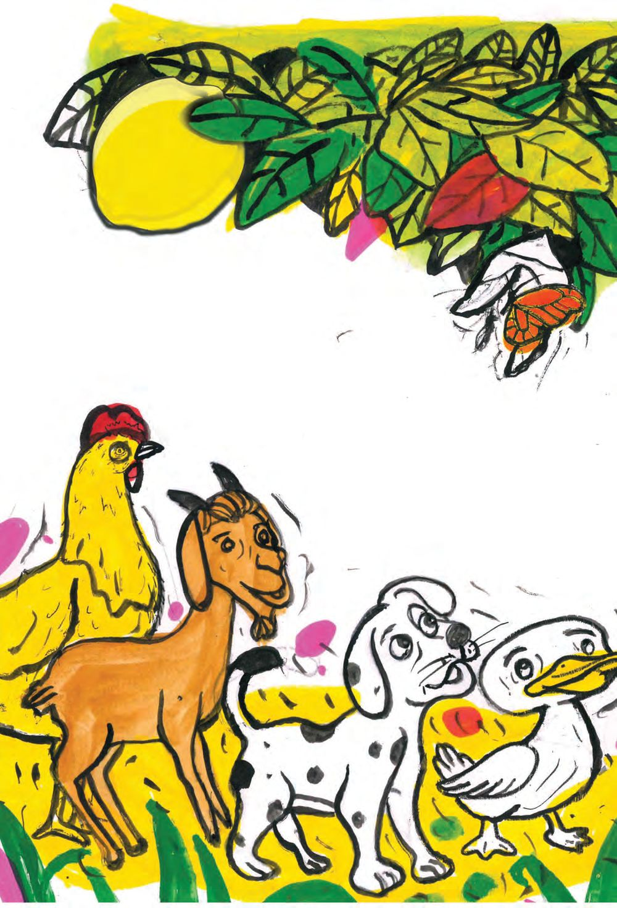

അതാ മുത്ത് പൊൊട്ടുന്നു!
27 27
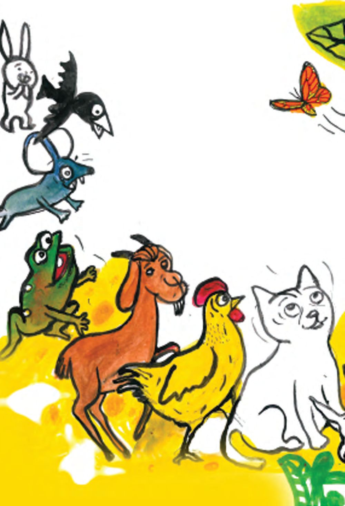
പകരം ചേർത്തുപാടാം ചേലുള്ള പൂമ്പാറ്റ വട്ടമിട്ടുപറന്നല്ലലോ. മുത്തമൊൊന്നു കൊൊടുത്തല്ലലോ. അമ്മുവിനുമ്മ തേനുമ്മ.
28
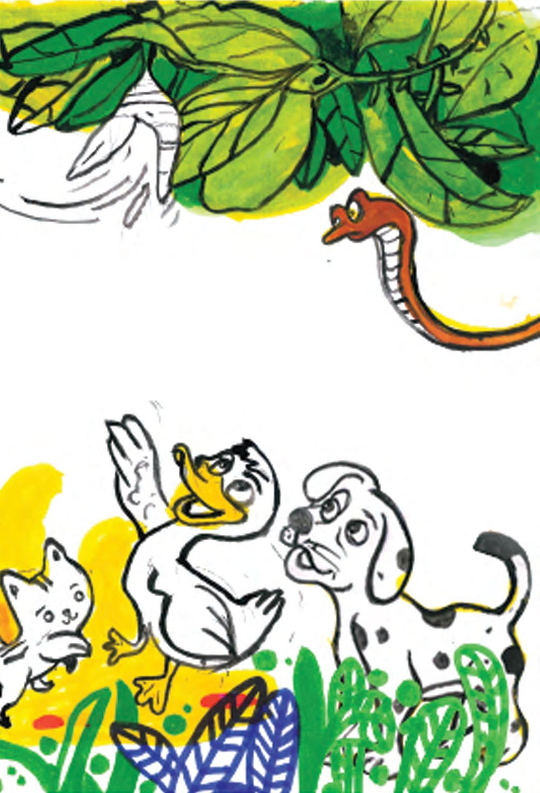
............................... പൂമ്പാറ്റ വട്ടമിട്ടുപറന്നല്ലലോ. ............................... കൊൊടുത്തല്ലലോ. അമ്മുവിനുമ്മ തേനുമ്മ.
29


നാം വളർത്തുന്നവയെ കയെത്തുാമോാ?
പേര് എഴുതാമോോ?
30
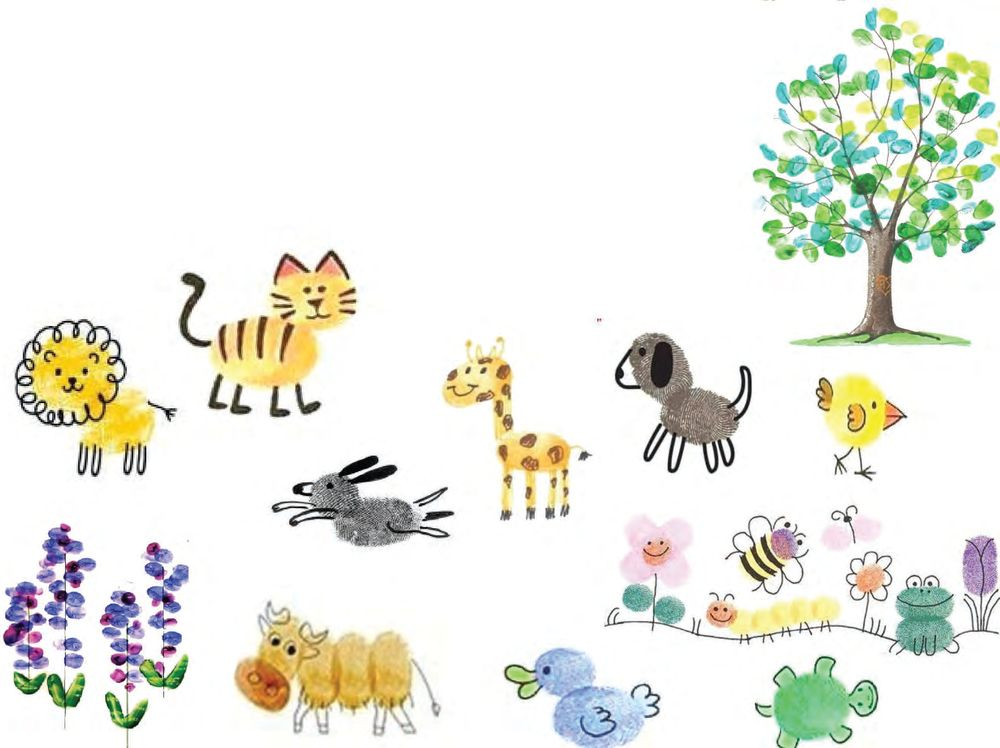
ഇതുപോോലെ ഇതുമോായെ വരച്ചാലോോ. വരയ്ക്കാമോാ?
31
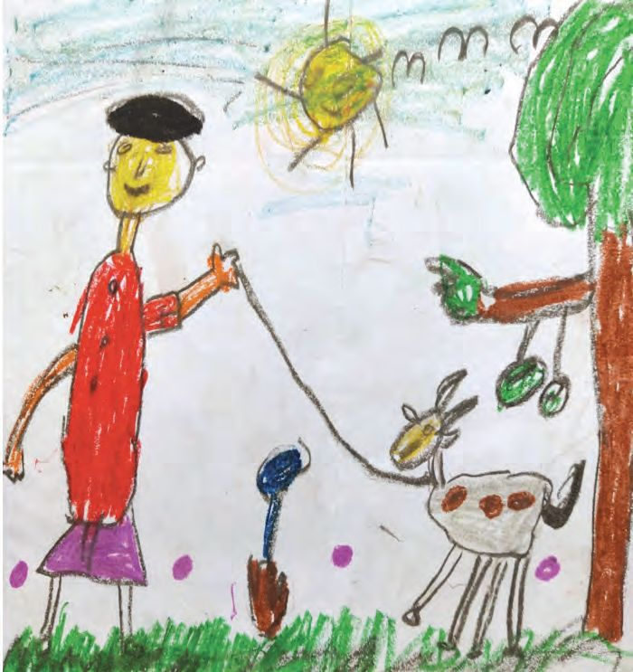
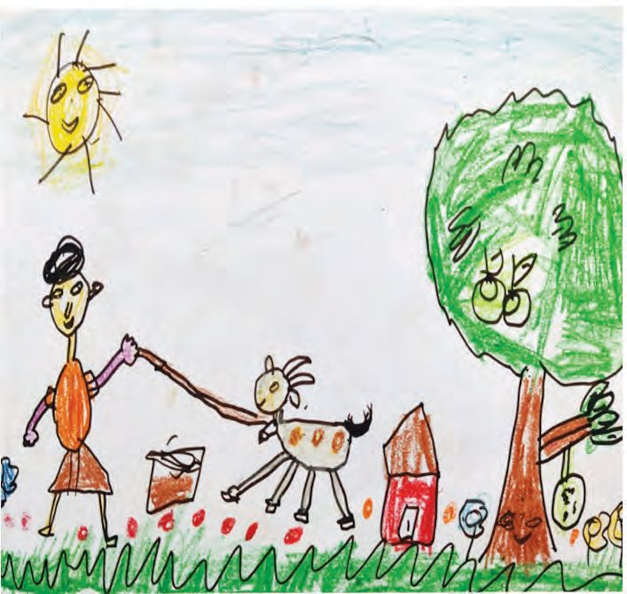
കിനാവ്
ഒരു കർഷകന് ഒരു ആടുണ്ടായിരുന്നു
32
എന്നും ആ കർഷകൻ ആടിന് തീറ്റ കൊൊടുക്കും
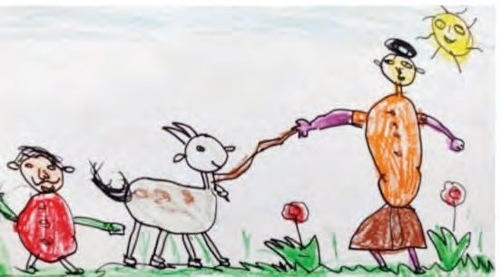
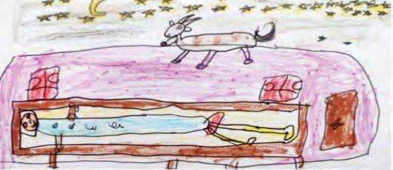
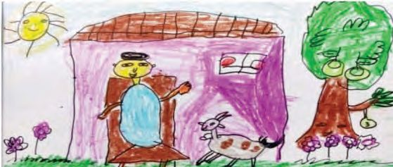
ഒരുനാൾ അയാൾ ആ ആടിപൊന വിറ്റു
ST-301-3-MALAYALAM-1-VOL-1
അന്നാ് രാവിൽ അയാൾ ഒരു കിനാവ് കണ്ു. ആട് തിരിപൊക വപൊന്നാന്നാ്.
പിേറ്റന്നാ് വാതിൽ തുറാന്നാേപ്ാൾ
33
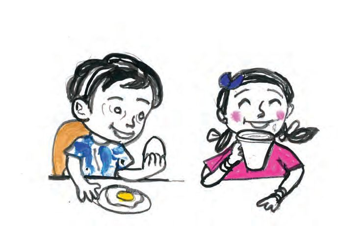
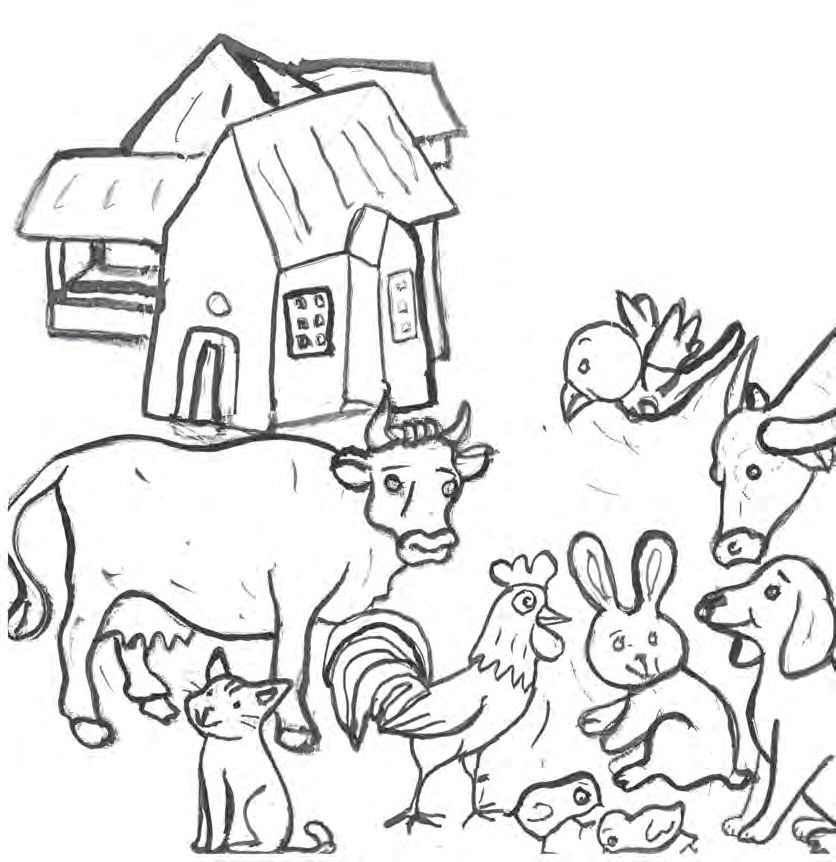
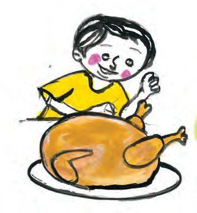
34
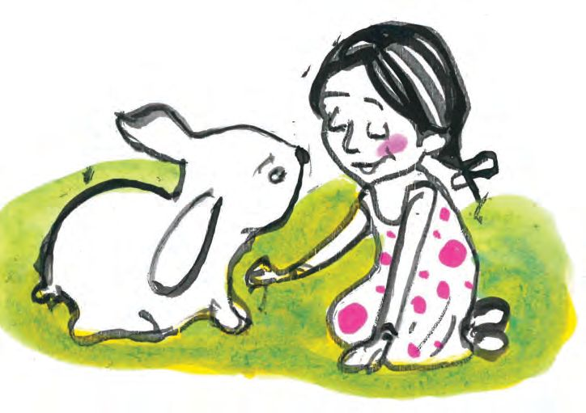
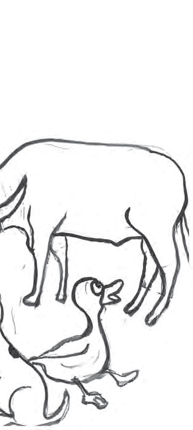
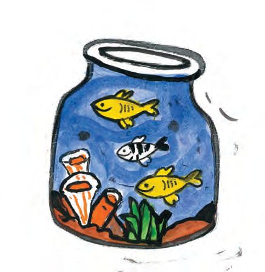
നിറം കൊൊടുത്ത് വരച്ചുചേർക്കാമോോ ?
35
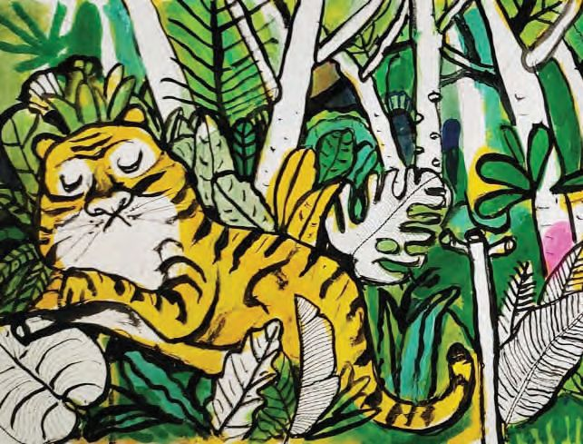
കായ് തേടി അവർ നടന്നു. കാട്ടിലൂടെ നടന്നു. ചൊൊക്കൻ മുന്നിൽ. കാർത്തി പിന്നിൽ. ചൊൊക്കൻ നിന്നു. ചെവി കൂർപ്പിച്ചു. അതാ,
ഒരു കടുവ ! 36
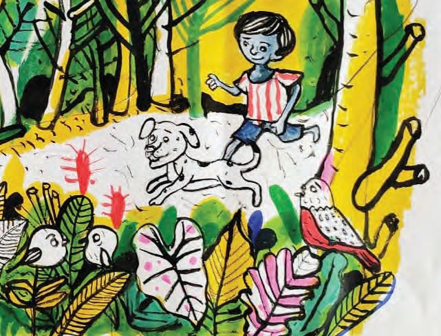
പിറ്റേന്ന് ചൊൊക്കൻ വന്നു. ചൊൊക്കൻ വിളിച്ചു. കാർത്തി പിന്നാലെ പോോയി. അതാ, മരച്ചുവട്ടിൽ കുട്ടുറുവൻകിളി. കാർത്തി കിളിയെ എടുത്തു. വെള്ളം കൊൊടുത്തു. ചൊൊക്കൻ കിളി പറന്നുപോോയി. ആളു ചൊൊക്കൻ വാലാട്ടി. കൊൊള്ളാമല്ലലോ തലക്കെട്ട് എഴുതുക. വരയും വരിയും പൊൊരുത്തപ്പെടുത്താമോോ?
37
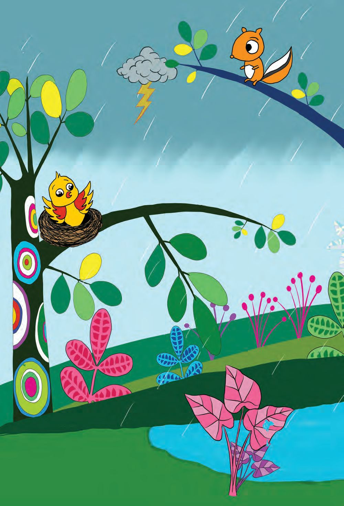
5 മണ്ണിലും മരത്തിലും ടും ടും ടും ട്ടെ ട്ടെ ഇടി വെട്ടി കാറ്റ് വീശി പെരുമഴ അമ്മേ, മഴ പെയ്യുന്നേ, എനിക്ക് പേടിയാകുന്നേ ങീ... ങീ...
ഛിൽ ഛിൽ ഈ ചില്ലയിലേക്ക് പോോരൂ... ഞാൻ കൂടെ കൂട്ടാം പഞ്ഞികൊൊണ്ട് പുതപ്പിക്കാം.
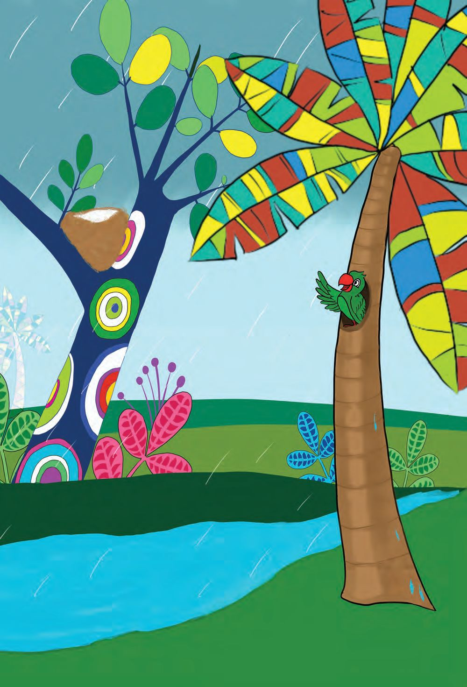
കുഞ്ഞിക്കിളീ മഴ നനയും. വായോ വായോ ഈ പൊൊത്തിലേക്ക് വായോ.
39

അണ്ണാൻ ചില്ലയിലേക്ക് എടുത്തുചാടി ചില്ലയിളകി, കൂടിളകി ............................................................................ 40
............................................................................ കുഞ്ഞിക്കിളിയും താഴേക്കുവീണു.

ീ ക്കിള ീ കുഞ്ഞി ക്കിള കുഞ്ഞി
41

........................................ ......................................
42

പൂരിപ്പിക്കാമോോ? കുഞ്ഞിച്ചിറകുകൾ വീശി വീശി അതാ ............................ ............................ വരുന്നു
43

പറയാമോോ? മെഴുകുകൊൊണ്ടൊൊരു കൊൊട്ടാരം അറകളുള്ളൊൊരു കൊൊട്ടാരം തേനൂറുന്നൊൊരു കൊൊട്ടാരം ആരുടെയാണീ കൊൊട്ടാരം? ........................................................
44


പാട്ടരങ്ങ് കൂടുകൾ തുന്നാരൻകിളി തുന്നിക്കൂട്ടിയ കൂടുകൾ കണ്ടിട്ടുണ്ടടോ? ഇലകൾ തമ്മിൽ തുന്നിക്കൂട്ടാൻ നാരുകളല്ലോോ നൂല്. നെല്ലലോലകളും തെങ്ങങോലകളും ചീന്തിയെടുത്തു മെടഞ്ഞല്ലലോ കുരുവികൾ കൂടുണ്ടാക്കുന്നു. കൊൊത്തിക്കകൊത്തി മരത്തിന്നുള്ളിൽ മുറി പണിയുന്നു മരംകൊൊത്തി. കേടുകൾ തീർക്കാനറിയില്ലാ, കിളി കൂടുകൾ പുതുതായ് പണിയുന്നു.
പൂരിപ്പിക്കാമോോ ................................................................. കീരികളുംം മണ്ണ് തുരന്ന് മാളത്തിൽ 45


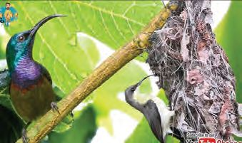
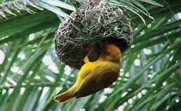
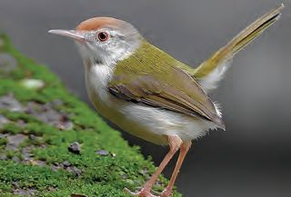
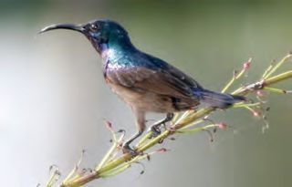
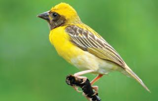
കൂട് ഉണ്ടാക്കാൻ എന്തതൊക്കെ വേണം. ചെയ്യുക
നാര് ഇല പുല്ല് കമ്പ് ഇല നാര് പഞ്ഞി പുല്ല് കമ്പ് കമ്പ് നാര് പുല്ല് ഇല പുല്ല് കമ്പ് ഇല നാര് ചകിരി ഇല നാര് പുല്ല് കമ്പ് 46